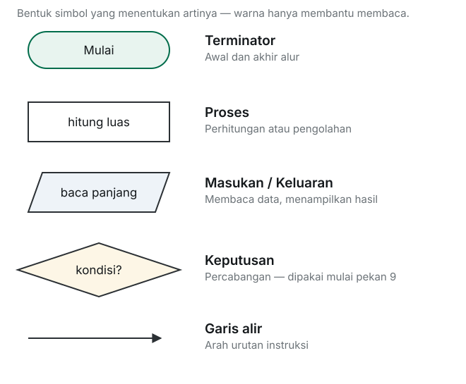
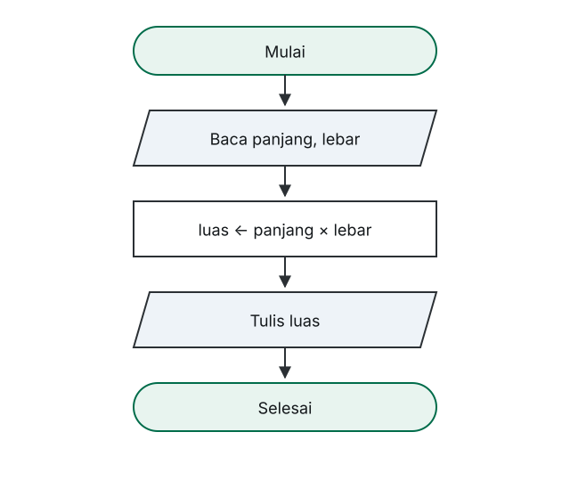
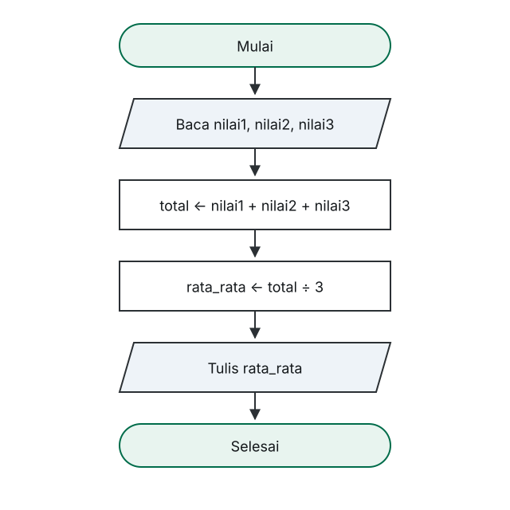
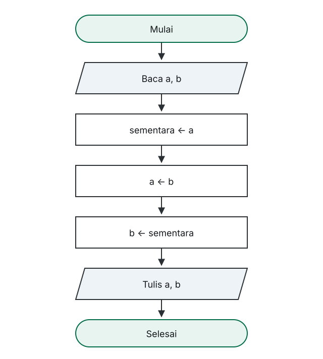

Universitas Ahmad Dahlan Aceh · Fakultas Sains dan Teknologi
Flowchart
Algoritma dan Pemrograman I · INFUAD-003 · 2 SKS · Program Studi Informatika (S1)
Pekan 4 · 5 Oktober 2026
Muhammad Fadhil Al Amal, S.Kom., M.Kom
Pekan 4
Yang akan kita bahas
01Apa itu flowchartMenggambarkan algoritma sebagai diagram
02Simbol standarLima bentuk yang menentukan arti
03Aturan menggambarSupaya diagram bisa dibaca orang lain
04Terjemahan dari pseudocodeSatu baris menjadi satu simbol
05Tiga contoh runtunanBeserta perbandingannya dengan pseudocode
Bagian 01
Apa itu flowchart
Algoritma yang sama, disampaikan sebagai gambar.
Definisi
Diagram yang menggambarkan urutan langkah penyelesaian masalah memakai simbol-simbol standar yang dihubungkan garis alir.
Isinya tidak berubah dari pseudocode. Yang berubah hanya cara menyampaikannya.
Alasannya
Kenapa perlu digambar juga?
01Kesalahan alur lebih cepat terlihatUrutan yang keliru mudah terlewat saat hanya membaca teks.
02Bisa dibaca orang non-teknisRekan dari bidang lain tidak perlu memahami notasi pseudocode.
03Memaksa kita menyederhanakanKarena menggambar butuh ruang, langkah yang tidak perlu terdorong keluar.
Bagian 02
Simbol standar
Bentuknya yang menentukan arti, bukan warnanya.
Notasi standar
Lima simbol yang akan kita pakai

Artinya
Masing-masing mewakili satu pekerjaan
- Terminator — awal dan akhir alur
- Persegi panjang — proses atau perhitungan
- Jajar genjang — masukan dan keluaran
- Belah ketupat — keputusan, dua cabang keluar
- Garis alir — arah urutan instruksi
Yang perlu diingat
Warna tidak punya makna
Yang menentukan
Bentuk simbol. Inilah yang membedakan proses dari masukan, dan dari keputusan.
Yang hanya membantu
Warna, ketebalan garis, dan tata letak. Diagram hitam-putih tetap sah sepenuhnya.
Bagian 03
Aturan menggambar
Supaya diagrammu bisa dibaca orang lain tanpa penjelasan tambahan.
Aturannya
Enam hal yang kita pegang
- Arah alur dari atas ke bawah, lalu kiri ke kanan
- Satu awal, satu akhir
- Setiap simbol harus berisi label
- Garis alir harus punya arah yang jelas
- Hindari garis yang bersilangan
- Satu simbol mewakili satu pekerjaan
Bagian 04
Dari pseudocode ke flowchart
Kalau pseudocodenya sudah benar, ini pekerjaan mekanis.
Pemetaan
Satu baris menjadi satu simbol
| Pseudocode | Simbol |
|---|
| BEGIN dan END | Terminator Mulai dan Selesai |
| READ panjang, lebar | Jajar genjang masukan |
| WRITE luas | Jajar genjang keluaran |
| luas ← panjang × lebar | Persegi panjang proses |
Jumlah simbol akan sama dengan jumlah baris di dalam BEGIN … END, ditambah dua terminator.
Cara memeriksa
Kalau jumlahnya tidak cocok
Berarti ada langkah yang terlewat, atau ada dua langkah yang tergabung ke dalam satu simbol.
Menghitung jumlah simbol adalah cara tercepat memeriksa apakah diagrammu lengkap.
Bagian 05
Tiga contoh
Semuanya masih runtunan lurus dari atas ke bawah.
Contoh 1
Luas persegi panjang

Setiap simbol hanya punya satu jalan masuk dan satu jalan keluar.
Contoh 2
Rata-rata tiga nilai

Dua persegi panjang berurutan: total harus dihitung sebelum rata_rata.
Contoh 3
Menukar isi dua variabel

Tiga persegi panjang yang urutannya tidak bisa ditukar.
Bagian 06
Flowchart atau pseudocode?
Keduanya menggambarkan algoritma yang sama.
Perbandingan
Kelebihan masing-masing
| Pseudocode | Flowchart |
|---|
| Menulis | Lebih cepat | Lebih lambat |
| Merevisi | Mudah | Perlu menata ulang tata letak |
| Melihat alur keseluruhan | Perlu dibaca baris demi baris | Terlihat sekaligus |
| Dibaca orang non-teknis | Sulit | Mudah |
| Alur bercabang dan berulang | Mulai sulit dibayangkan | Jauh lebih jelas |
Aturan praktis
Pseudocode untuk merinci langkah, flowchart untuk memeriksa alur.
Selama algoritmanya masih lurus, keduanya sama mudahnya. Keunggulan flowchart baru terasa saat alurnya mulai bercabang.
Hindari
Kesalahan yang sering muncul
- Bentuk yang salah — perhitungan di jajar genjang, masukan di persegi panjang
- Simbol tanpa label
- Tanpa tanda panah, sehingga arah alurnya ambigu
- Dua pekerjaan ditumpuk dalam satu simbol
- Tata letak terlalu rapat untuk diproyeksikan
Selanjutnya
Menuju pertengahan semester
P5Konsep dataJenis nilai yang bisa disimpan variabel, dan pengaruhnya pada pengolahan
P6Operator dan ekspresiBagaimana nilai diolah
P7Studi kasusPerhitungan nilai mahasiswa — menggabungkan pekan 1 sampai 6
Tanpa jawaban benar atau salah
Soal refleksi
- Gambarkan flowchart untuk menghitung keliling persegi panjang
- Ubah pseudocode yang kamu tulis pekan lalu menjadi flowchart
- Gambarkan versi salah dari flowchart menukar dua nilai, lalu tunjukkan bagian mana yang tidak masuk akal
- Kenapa simbol keputusan berbentuk belah ketupat, bukan persegi panjang?
Dua soal lagi tersedia di catatan kuliah.
Terima kasih
Gambar alurnya, bukan hanya langkahnya
Kesalahan urutan jauh lebih cepat terlihat ketika alurnya tergambar.
Catatan lengkap pekan ini: mfa-labs.github.io/kuliah/algoritma-dan-pemrograman-1/
1 / 25
← → navigasi · F layar penuh